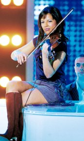

À la Réunion, les filles s'appellent Émilie

Émilie Ducros
« À la Réunion, les filles s'appellent Émilie. » C'est à peu de choses près ce que pourraient se dire les fans de la starac'. L'année dernière, une certaine Emilie faisait une entrée remarquée dans la 4ème saison de la Starac', en étant la première représentante de l'Outre-Mer, réunionnaise de surcroit. Sa sortie a été encore plus remarquée puisqu'elle a été virée du jeu en cours de partie. Elle aurait trop arrosé ses 19 ans au cours de la petite fête organisée par la prod.
Pour l'édition suivante de la Star Academy, une nouvelle réunionnaise s'est retrouvée sellectionnée et elle s'appelait Émilie. Si je raconte que TF1 n'a pas voullut faire brûler le torchon trop longtemps avec une île peuplée de quelques 700.000 téléspéctateurs potentiels, je pense que j'aurais droit à un démenti de la production.
Émilie Minatchy
Toujours est-il que les réunionnaises se sont suivies mais ne se resemblent pas. Émilie Minatchy (photo ci-contre) est restée longuement dans l'emission et est actuellement en tournée avec le reste du groupe. Toute l'équipe de la Starac est venu chanter à la Réunion au début de ce mois et c'est grâce à elle que ces concerts ont eu lieu malgré la peur du chik'.
Émilie Minatchy a aujourd'hui son site web officiel présentant la violoniste-chanteuse à ses fans. Elle devrait bientôt tourner dans une comédie musicale. Quand à la première Émilie, Émilie Ducros, elle s'est d'abbord fait appeler Emy-Lee et a prit aujourd'hui le nom de scène Surangie. Elle devrait bientôt sortir un album.
Tous les sites cités ont aujourd'hui disparu. Même s'il reste des Emilie à la Réunion, d'autres filles portent un autre nom… Vous vous en doutiez.